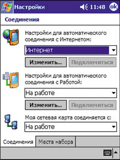
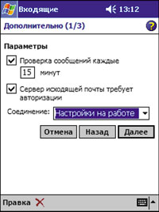

Максим Донченко,
начальник отдела мобильных решений компании "Кварта Технологии" (http://www.quarta.ru)
maximd@quarta.ru
Начало истории карманных компьютеров (КПК), использующих ОС семейства Microsoft Windows, можно отнести к ноябрю 1996 г., когда была представлена первая версия Windows CE 1.0 и появились первые устройства, работающие под ее управлением. С тех пор сами КПК и операционная система существенно изменились. В октябре прошлого года корпорация Microsoft представила новую систему для карманных компьютеров, которая получила название Microsoft Windows Powered Pocket PC 2002 (на этапе разработки она имела кодовое название Merlin). Одновременно с этим объявлением практически все крупнейшие производители карманных компьютеров - Compaq, Hewlett-Packard, Casio, NEC и Toshiba, - представили новые устройства, работающие под управлением этой системы. Данное событие стало ключевым для всей индустрии мобильных устройств - на рынке появилась новая интегрированная открытая аппаратно-программная платформа, что по важности, наверное, можно сравнить с появлением в 1981 г. первого IBM PC.
В марте этого года была представлена новая расширенная версия Pocket PC, куда были включены новые функции, позволяющие интегрировать в карманный компьютер функции сотового телефона. Она получила название Microsoft Windows Powered Pocket PC 2002 Phone Edition.
Коммуникации в Pocket PC 2002
Пожалуй, успешная реализация коммуникационного модуля - один из ключей к успеху при разработке решений на базе мобильных устройств. Windows Powered Pocket PC 2002 - первая версия ОС, в которой разработчики из Microsoft решили отказаться от коммуникационной модели с удаленными соединениями, управляемыми через RAS API, которая использовалась во всех ОС семейства Windows начиная с Windows 95. Взамен была разработана модель, построенная на базе новой службы, называемой Connection Manager. В рамках данной коммуникационной модели разработчики постарались сделать максимально прозрачным для пользователя то, как осуществляется соединение карманного компьютера с внешним миром - в зависимости от текущего местонахождения и доступного коммуникационного оборудования, будь то кабельное соединение через настольный компьютер, подключение через коммутируемые линии с помощью модема, беспроводная сеть - через соответствующий адаптер или сотовый телефон. Главное - чтобы при необходимости любая программа, запускаемая на карманном компьютере, получила доступ к необходимым ей для работы сетевым сервисам.
Как все это реализовано? Теперь для пользователя существует понятие местоположения - "дома", "на работе" и т. п. Местоположение определяет, как и с помощью какого оборудования можно подключаться к сетевым сервисам в данных условиях. Для каждого из местоположений существует свой набор настроек. Сетевая плата в соответствии с данной концепцией может быть привязана к тому или иному местоположению.
Взгляд пользователя
С пользовательской точки зрения теперь вся коммуникационная жизнь с карманным компьютером сводится к аккуратной настройке нескольких простых параметров в программе "Соединения" из настроек карманного компьютера (рис. 1).
|  | Рис. 1. Настройки Pocket PC 2002.
|
Из рис. 1 видно, что пользователь определил для себя два местоположения - "дома" и "на работе". На работе мобильный компьютер подключается через локальную сеть на базе Radio Ethernet, а дома или в дороге можно установить GPRS-соединение, используя сотовый телефон в качестве модема для передачи данных. Если необходимо, чтобы на работе все данные с карманного компьютера передавались через сетевую карту, в настройках нужно указать, что сетевая карта используется в местоположении "на работе". Для правильного соединения с Интернетом в настройки соответствующего местоположения следует добавить новое соединение, которое будет обеспечивать передачу данных через GPRS. Желательно, чтобы регулярно используемые приложения всегда корректно работали с сетевыми сервисами, выбирая максимально эффективный метод независимо от местоположения. Для этого прежде всего следует в настройках приложения определить, какое из местоположений считать для него базовым и, соответственно, что делать для установления соединения.
Рассмотрим пример работы с электронной почтой. Допустим, я использую корпоративный почтовый сервер и ожидаю, что моя программа будет обращаться именно к нему. При этом достаточно установить в настройках почтовой службы параметр, указывающий, что для соединения с моим почтовым сервером надо использовать настройки от местоположения "на работе", как показано на рис. 2. Проверим, как это работает. Для начала подключим карманный компьютер к офисной сети через адаптер Radio Ethernet и попытаемся принять почту. На следующем шаге попытаемся повторить прием почты из дома, где, естественно, офисная сеть оказывается недоступной. Как и в первом случае, схема действует успешно. Только теперь в процессе соединения видно, как карманный компьютер связывается с сотовым телефоном для установления GPRS-соединения.
|  | Рис. 2. Настройки электронной почты.
|
Pocket PC 2002 SDKВ январе 2002 г. корпорация Microsoft представила новый инструментарий разработчика приложений для Pocket PC 2002. На первый взгляд, появление SDK запоздало, если учесть, что сама система и устройства были объявлены еще в октябре прошлого года. Но время было потрачено специалистами из Microsoft с большой пользой - им удалось существенно переработать весь инструментарий для повышения эффективности и облегчения труда разработчика. Как и все предыдущие комплекты разработчика, Pocket PC 2002 полностью интегрируется в среду Microsoft Embedded Visual Tools 3.0, обеспечивая возможность разработки приложений на C/C++ и Visual Basic, включает в себя все необходимые библиотеки, мастера для быстрого создания новых приложений и большое количество примеров различных приложений. Отличительной особенностью инструментария стало то, что в комплект поставки включена принципиально новая среда отладки программ на рабочем месте разработчика (рис. 3). За основу была взята технология, разработанная компанией Connectix, которая позволяет в рамках одной системы создавать виртуальные машины, полностью эмулирующие определенные аппаратные конфигурации и работающие под управлением различных ОС. Стараниями специалистов из Microsoft разработчик получил возможность создавать и полностью отлаживать свои программы в условиях, максимально приближенных к работе на настоящих карманных компьютерах, используя свой настольный ПК, работающий под управлением Microsoft Windows 2000 Professional или Microsoft Windows XP. Единственные два класса программ, которые сегодня невозможно отладить, используя эмулятор, - это приложения, выполняющиеся в режиме реального времени, и драйверы специализированных устройств, реализация которых не заложена в текущей версии эмулятора.
В дополнение ко всему комплект разработчика включает полный набор утилит, которые могут понадобиться в процессе разработки приложений. Сюда входят программы, с помощью которых можно управлять (как в эмуляторе, так и на реальном устройстве) реестром, файловой системой и процессами, а также получать моментальные снимки состояния экрана. Комплект разработки бесплатно доступен в Интернете по адресу http://msdn.microsoft.com/downloads/sample.asp?url=/MSDN-FILES/027/001/908/msdncompositedoc.xml. |
Взгляд программиста
Далее можно перейти к тому, как реализовать такую функциональность в прикладной программе. Для решения подобных задач в Pocket PC 2002 имеется служба Connection Manager, предоставляющая прикладным программам набор функций (они перечислены в табл. 1).
Таблица 1. Список функций службы Connection Manager
| Функция | Описание |
| ConnMgrApiReadyEvent | Возвращает идентификатор события, указывающего, что Connection Manager запущен и готов к работе |
| ConnMgrConnectionStatus | Возвращает состояние текущего соединения |
| ConnMgrEnumDestinations | Возвращает список доступных для соединения сетей |
| ConnMgrEstablishConnection | Создает запрос на установление соединения |
| ConnMgrEstablishConnectionSync | Создает запрос на соединение и ожидает, пока запрошенное соединение не будет установлено; если этого не происходит, возвращает ошибку |
| ConnMgrMapURL | Определяет по запрошенному URL глобальный уникальный идентификатор сети (GUID), из которой возможен доступ к искомому ресурсу |
| ConnMgrProviderMessage | Пересылает управляющие сообщения провайдерам соединений или планировщику соединений |
| ConnMgrRegisterScheduledConnection | Регистрирует установление соединения по расписанию. Расписание будет активно до момента полной перезагрузки карманного компьютера |
| ConnMgrReleaseConnection | Завершает установленное соединение |
| ConnMgrSetConnectionPriority | Изменяет приоритет соединений |
| ConnMgrUnregisterScheduledConnection | Удаляет запланированное соединение из расписания |
Все функции можно разделить на три группы. Первая объединяет сервисные функции, которые используются для проверки работоспособности Connection Manager и получения списка доступных сетей. К ним относятся ConnMgrApiReadyEvent, ConnMgrEnumDestinations и ConnMgrProviderMessage.
Вторая группа включает функции установки соединения. Это основные функции, чаще всего используемые в приложениях, - ConnMgrConnectionStatus, ConnMgrEstablishConnection, ConnMgrEstablishConnectionSync, ConnMgrMapURL, ConnMgrReleaseConnection и ConnMgrSetConnectionPriority.
К третьей группе относятся три функции работы с планировщиком соединений - ConnMgrRegisterScheduledConnection и ConnMgrUnregisterScheduledConnection.
Не будем останавливаться на функциях первой группы, достаточно простых и интуитивно понятных. Наибольший интерес представляет вторая группа. Начнем с функции ConnMgrMapURL. Это основной двигатель, который определяет всю интеллектуальность системы коммуникаций Pocket PC 2002. В качестве параметра ConnMgrMapURL необходимо передать URL-адрес того ресурса, к которому мы хотим получить сетевой доступ из своей программы. Функция возвращает идентификатор сети, через которую такой доступ возможен, и его индекс, используемый для дальнейшего поиска. Пример подобного вызова приведен в листинге 1.
Листинг 1
//
// Поиск идентификатора сети (GUID) по пути
//
HRESULT GetNetworkFromPath(LPCTSTR pszPath)
{
if( pszPath )
{
if( m_pszPath )
delete m_pszPath;
m_pszPath = new TCHAR[lstrlen(pszPath)+1];
if( m_pszPath == NULL )
return E_OUTOFMEMORY;
lstrcpy(m_pszPath, pszPath);
}
return ConnMgrMapURL(m_pszPath, &m_gNetwork, 0);
} |
В ответ на первый запрос к ConnMgrMapURL Connection Manager возвращает идентификатор той сети, которая, по его мнению, максимально эффективна для доступа к запрошенному ресурсу. В большинстве случаев на этом можно остановиться, перейдя далее к самой процедуре установления соединения. Но иногда бывает необходимо получить полный список сетей, через который доступен ресурс, и, исходя из каких-либо дополнительных характеристик (например, из информации о стоимости того или иного соединения), сделать выбор. Это достаточно просто - надо всего лишь вызывать функцию ConnMgrMapURL до тех пор, пока она не вернет ошибку, и сохранять в массиве полученные идентификаторы сетей.
Итак, мы получили идентификатор сети, с помощью которого можно установить соединение. Давайте рассмотрим максимально эффективный, но наиболее сложный в реализации вариант асинхронной установки. Текст соответствующей процедуры приведен в листинге 2.
Листинг 2//
// Процедура для установления
// соединения в асинхронном режиме.
// Исполняется в виде отдельной цепочки исполнения
//
DWORD ConnectionThread()
{
HANDLE hThisThread=m_hConnectionThread;
CONNMGR_CONNECTIONINFO ConnInfo={0};
ConnInfo.cbSize=sizeof(ConnInfo);
ConnInfo.dwParams=CONNMGR_PARAM_GUIDDESTNET;
ConnInfo.dwFlags=GetProxy() ? CONNMGR_FLAG_PROXY_HTTP: 0;
ConnInfo.dwPriority=CONNMGR_PRIORITY_USERINTERACTIVE ;
ConnInfo.guidDestNet = GetNetworkGuid();
HRESULT hr = ConnMgrEstablishConnection(&ConnInfo,
&m_hConnection);
if( FAILED( hr ) )
{
DoConnectingError();
SetCache(FALSE);
}
else
{
DoEstablishingConnection();
HANDLE hObjects[2];
hObjects[0]=m_hConnection;
hObjects[1]=m_hThreadStop;
BOOL bStop=FALSE;
ResetEvent(m_hThreadStop);
while( bStop == FALSE )
{
DWORD dwResult = WaitForMultipleObjects( 2, hObjects, FALSE,
INFINITE);
if (dwResult == (WAIT_OBJECT_0))
{
HRESULT hr;
DWORD dwStatus;
hr=ConnMgrConnectionStatus(m_hConnection,&dwStatus);
m_dwStatus = dwStatus;
if( SUCCEEDED(hr))
{
if( DoStatusUpdate(m_dwStatus) != S_OK )
bStop=TRUE;
}
else
{
m_dwStatus=hr;
bStop=TRUE;
}
}
else // Ошибка, или программа
// сигнализировала остановку
{
bStop = TRUE;
ResetEvent(m_hThreadStop);
}
}
}
DoReleaseConnection();
// Завершение соединения
// и очистка кэш-памяти при необходимости
if( m_hConnection )
{
ConnMgrReleaseConnection(m_hConnection, GetCache() );
}
CloseHandle(hThisThread);
return GetStatus();
} |
Начнем с того, что надо заполнить структуру CONNMGR_CONNECTIONINFO, описывающую наше соединение. В этой структуре мы устанавливаем несколько параметров. Главные из них следующие.
- ConnInfo.dwParams=CONNMGR_PARAM_GUIDDESTNET - указывает, что для соединения мы используем идентификатор сети, полученный ранее.
- ConnInfo.dwPriority=CONNMGR_PRIORITY_USERINTERACTIVE - указывает, что это соединение актуально для работы пользователя и что при установлении другого соединения с более низким приоритетом последнее будет разорвано.
- ConnInfo.guidDestNet = GetNetworkGuid() - инициализируемый идентификатор сети, к которой мы хотим подключиться.
Теперь можно устанавливать соединение. Для этого вызовем функцию ConnMgrEstablishConnection, передавая ей в качестве параметров указатель на заполненную структуру и указатель, где будет сохранен идентификатор соединения. Если данная функция выполнена успешно, то нам остается только дождаться того момента, когда функция ConnMgrConnectionStatus вернет статус CONNMGR_STATUS_CONNECTED, сигнализируя, что соединение успешно установлено и можно приступать к работе с сетевым ресурсом, адрес которого мы использовали в самом начале.
Пришло время посмотреть на третью группу функций Connection Manager. Достаточно часто в различных решениях необходимо, чтобы программы опрашивали тот или иной сетевой ресурс по установленному расписанию. Для реализации подобных сценариев работы используются функции ConnMgrRegisterScheduledConnection и ConnMgrUnregisterScheduledConnection. Первая предназначена для внесения в расписание соединений новой записи, а вторая - для удаления записей из расписания. Поскольку все компоненты службы Connection Manager исполняются в процессе, отдельном от прикладной программы, разработчики решили, что при работе с расписанием информация о событиях из него будет передаваться вызовом пользовательской программы с определенными пользователем параметрами.
Добавить в расписание новое соединение очень просто - необходимо вызвать функцию ConnMgrRegisterScheduledConnection, передав ей в качестве параметра заполненную структуру SCHEDULEDCONNECTIONINFO (описание ее полей приведено в табл. 2). Для удаления записи из расписания нужно просто вызвать функцию ConnMgrUnregisterScheduledConnection, передав ей в качестве параметра строку, аналогичную полю szToken из структуры SCHEDULEDCONNECTIONINFO, передававшуюся при создании записи.
Таблица 2. Поля структуры SCHEDULEDCONNECTIONINFO
| Поле | Описание |
| guidDest | Глобальный уникальный идентификатор (GUID) сети, с которой планируется установить соединение |
| uiStartTime | Время, когда надо установить соединение; представляется в том же формате, что и время в файловой системе (число 100-наносекундных интервалов начиная с 1 января 1601) |
| uiEndTime | Время окончания соединения; представляется в том же формате, что и время в файловой системе |
| uiPeriod | Промежуток между попытками установки соединения (в 100 наносекундных единицах). Если установить значение данного поля в 0, то попыток установки соединения не будет |
| szAppName[MAX_PATH] | Имя приложения, запускаемого, когда требуемое соединение установлено |
| szCmdLine[MAX_PATH] | Командная строка для приложения, запускаемого, когда требуемое соединение установлено |
| szToken[32] | Уникальный идентификатор запланированного соединения |
| bPiggyback | Если значение данного поля отлично от нуля, то приложение будет запускаться всегда, когда запрошенное сетевое соединение установлено. Если значение поля uiPeriod равно 0, тогда приложение будет запускаться только тогда, когда соединение с идентификатором из поля guidDest было установлено из других приложений |
Конечно, в небольшой статье сложно в деталях описать весь функционал коммуникационной службы Connection Manager и все варианты его использования. В любом случае надеюсь, что приведенная в статье информация поможет вам создавать эффективные решения с использованием новейших коммуникационных технологий.
Дополнительная информацияБолее подробную информацию о разработке программ для Pocket PC 2002 можно найти в Интернете по адресу http://msdn.microsoft.com/library. SDK для построения программы на платформе Pocket PC 2002 можно загрузить по адресу http://msdn.microsoft.com/downloads/sample.asp?url=/MSDN-FILES/027/001/908/msdncompositedoc.xml. Средства разработки - Microsoft Embedded Visual Tools 3.0 - можно загрузить по адресу http://www.microsoft.com/mobile/downloads/emvt30.asp.
|